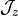

idPIE profile description
dPIE summary
A summary on the dual Pseudo-Isothermal Elliptical matter distribution (dPIE) may be found here, and this type of gravitational potential is described at length in Elìasdòttir et al. (2007, Appendix A)
. It is identified in lenstool by id: 81.
Assuming we neglect ellipticity in this documentation, dPIE profiles write:
where
is the density normalisation,
 the core radius, and
the core radius, and
 the cut radius.
the cut radius.
A sum of dPIE profiles may be assumed to represent the total matter density
(baryons + dark matter) in the lens:
Thus the profile of the gravitational potential
 may be deduced from the
may be deduced from the dPIE sum:
For one dPIE profile
, the potential writes:
Hydrostatic idPIE  ICM density profile
ICM density profile
If we assume the intra-cluster medium (ICM) to be in hydrostatic equilibrium, we may simplify the Navier-Stokes equation to:
where
is the ICM electron number volume density,
the ICM electron temperature,
the mean molecular weight of the ICM gas,
kg the unified atomic mass, and
the Boltzmann constant.
Assuming the temperature to be a function of the electronic density, we can integrate this expression to:
where
 is a bijection, as long as the radial density profile
is a sum of dPIE potentials.
Using a self-similar polytropic temperature profile, the
integral only depends on redshift
 .
Bijections being invertible functions, we may revert the previous equation, thus yielding the
.
Bijections being invertible functions, we may revert the previous equation, thus yielding the idPIE density profile:
ICM profile optimisation with idPIE profile
Given the
ICM electron density, we can compute
, the X-ray surface brightness:
where
is the observed energy band,
is the cosmological redshift of the lens,
and
are respectively the mean molecular weight of electron and hydrogen, and
 is the normalised cooling function (in
) for an ICM electron temperature
and metallicity
is the normalised cooling function (in
) for an ICM electron temperature
and metallicity
 .
Here, we assume the metallicity to be constant throughout the cluster
.
.
Here, we assume the metallicity to be constant throughout the cluster
.
Once the model surface brightness map computed, it is compared to observations of Chandra or XMM-Newton X-ray satellites.
Note
TODO: See section on statistics for more details.